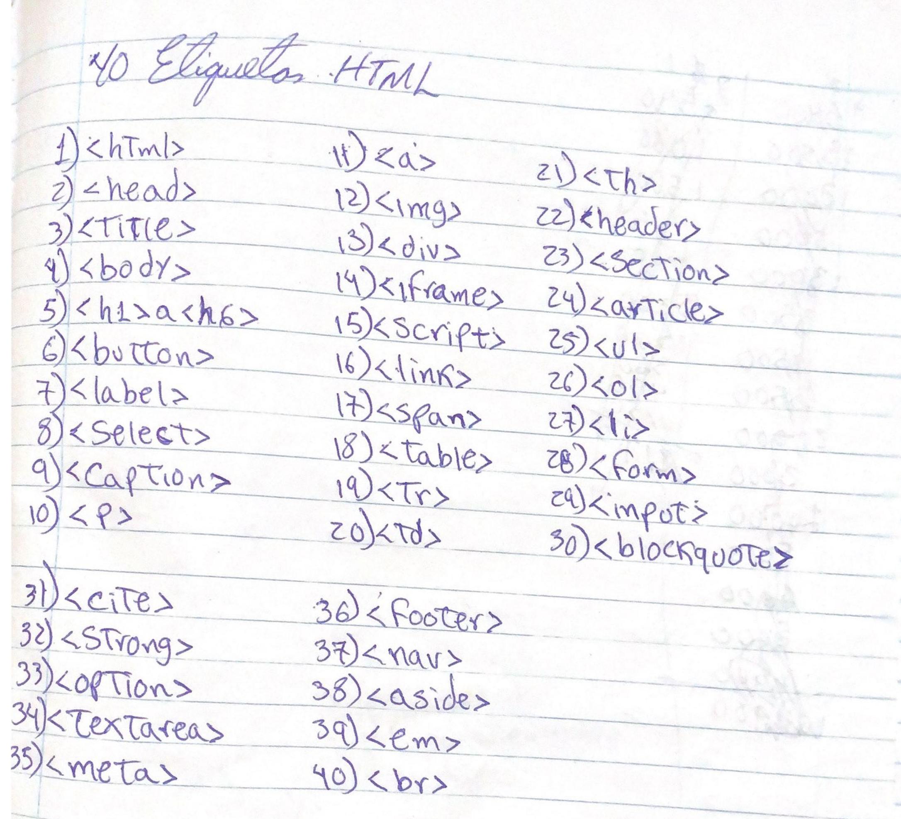
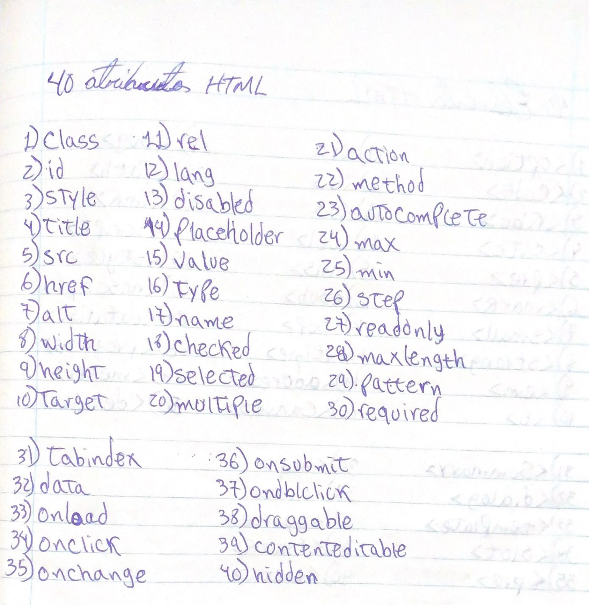
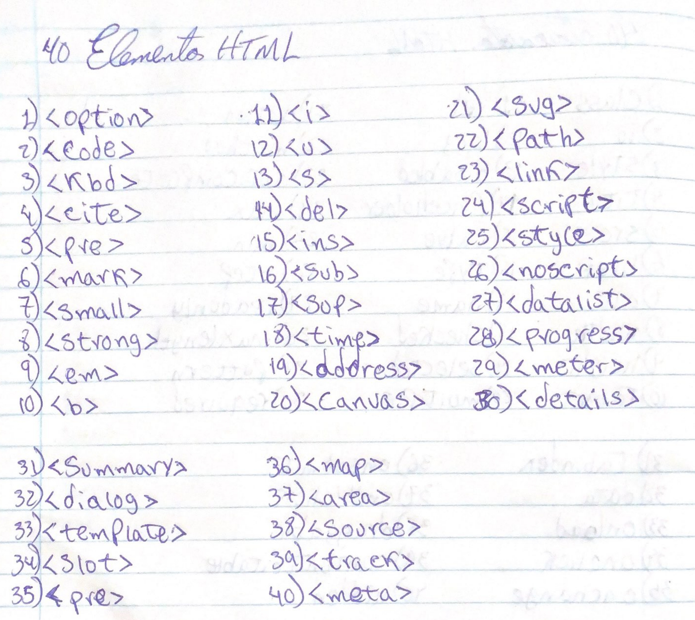
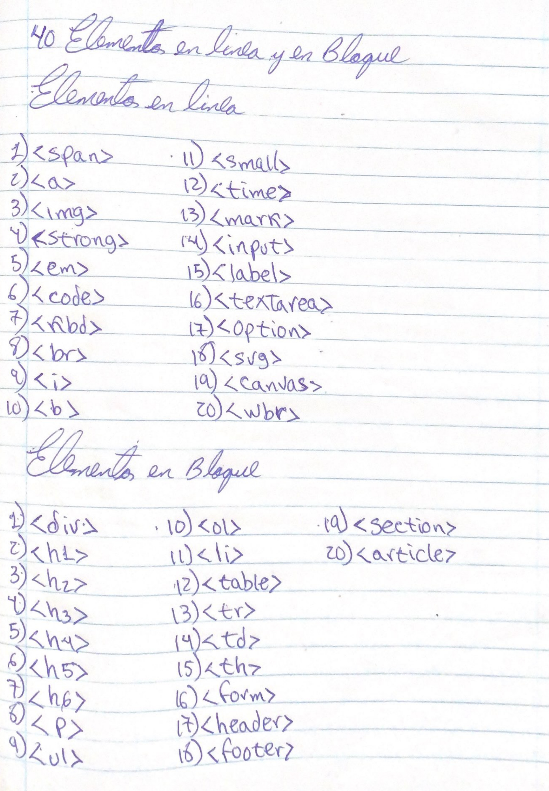

La jerarquía de directorio de un proyecto web se refiere a la estructura organizativa de carpetas y archivos que componen un sitio web.
Componentes Clave de la Jerarquía
- /Root:
- Carpeta principal que contiene todos los archivos y subdirectorios del proyecto.
- /Index.html:
- Página de inicio, el primer archivo que se carga al acceder al sitio.
- /CSS:
- Contiene archivos de hojas de estilo (CSS) que definen la apariencia visual. Ejemplo: styles.css.
- /JS:
- Almacena scripts de JavaScript que añaden interactividad y funcionalidad. Ejemplo: main.js.
- /Images:
- Carpeta para imágenes utilizadas en el sitio. Ejemplo: logo.png.
- /Fonts:
- Contiene fuentes personalizadas utilizadas en el diseño. Ejemplo: custom-font.woff.
- /Assets:
- Almacena otros recursos estáticos, como videos y documentos PDF. Ejemplo: video.mp4.
- /Components:
- Carpeta opcional para componentes reutilizables del diseño. Ejemplo: button.html.
- /Api:
- Scripts del lado del servidor que manejan solicitudes y respuestas. Ejemplo: get-data.php.
- /Tests:
- Archivos de pruebas para asegurar el correcto funcionamiento del código. Ejemplo: test-main.js.
- Regla utilizada para validar y certificar una página web
- Correcta sintaxis: Todas las etiquetas deben estar bien formadas y cerradas.
- Uso adecuado de atributos: Verificar que los atributos sean válidos para cada etiqueta.
- Accesibilidad: Cumplir con pautas que faciliten el acceso a personas con discapacidades, como el uso de atributos alt en imágenes.
- Reglas para escribir HTML.
- Declaración del DOCTYPE: Incluir al inicio para definir el tipo de documento.
- Estructura básica: Utilizar siempre las etiquetas , , y .
- Etiquetas anidadas: Asegúrate de cerrar las etiquetas en el orden correcto.
- Minúsculas: Usa minúsculas para etiquetas y atributos.
- Atributos entre comillas: Coloca los valores de atributos entre comillas.
- Meta charset: Incluye en el .
- Comentarios: Usa para añadir comentarios.
- Semántica: Utiliza etiquetas semánticas como
- Accesibilidad: Añade atributos como alt en imágenes.
- Cierre de etiquetas: Asegúrate de cerrar todas las etiquetas
- Estructura básica de un archivo web
La validación web es el proceso de asegurar que el código HTML/CSS cumple con los estándares del W3C (World Wide Web Consortium). Esto se realiza mediante herramientas como el W3C Validator, que verifica:
Para escribir HTML de forma efectiva, se deben seguir ciertas reglas:

40 Etiquetas HTML
40 Atributos HTML
40 Elementos HTML
40 Elementos en línea y en bloque
